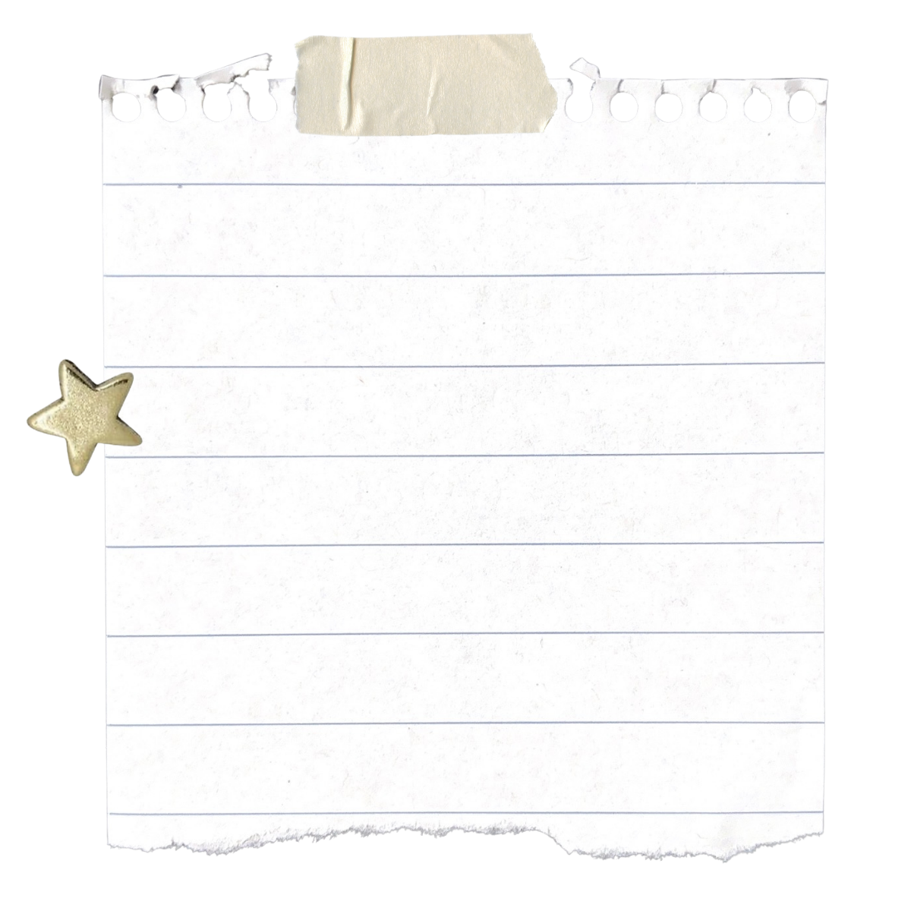
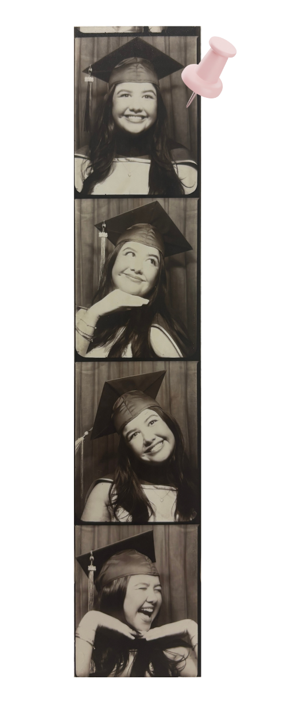

I am a recent graduate of the UC Berkeley Graduate School of Journalism where I emphasized in multimedia and climate reporting. I'm passionate about visual storytelling with experience in web design, video reporting and motion graphics. My stories have been featured in Richmondside, KPBS, Civil Eats, Bay Nature, Local News Matters and KneeDeep Times.
